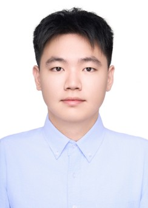
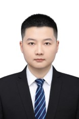
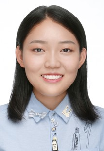
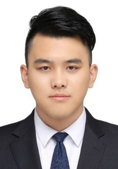
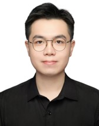
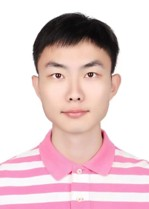
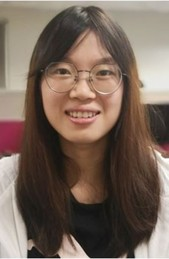

Members of the ICON Research Team
PEOPLE PAGE · VER 5

Power electronics, power converters and motor drives

GaN-based modular multilevel converter hardware design and modulation

Model predictive motor control

Model predictive control for modular multilevel converters

Sensorless control and model-free motor control

Grid-forming converters

Current control for PMSM drives

Motor drives and control